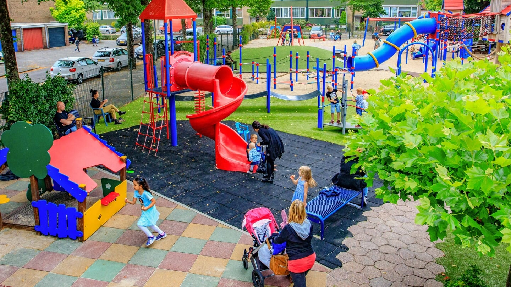

Description / Features: This playground is well known in the Hilversum area. It sits adjacent to the heath (Hilversumse Heide). It offers a mix of climbing structures, swings, and open play space. There is a café-style kiosk and a terrace area for parents, with picknick tables available.
Facilities: Toilets (with baby changing / commode) are available. You may bring your own food and drink (though some restrictions apply on terrace use)
Safety / Enclosure: Not all detailed safety features are documented, but given the location next to open heath and active playground association, supervision is expected; check before arrival.
Accessibility & Transport: Close to local streets; parking or public transport options should be verified locally.
Tips: Bring your own snacks. The terrace offers a good view while children play. For quieter visits, consider mornings or weekdays.

Speeltuin De Zoutkeet (Hilversum)
Location: In Hilversum South, not far from the heathland area
Description / Features: An inclusive and well-enclosed playground. Good for the smallest children. It features multiple sandboxes (one with water pump), swings, a zip line / cable ride, climbing equipment, and more.
Safety & Accessibility: The playground is fenced / enclosed, which is especially useful for toddlers. It includes a swing accessible from a wheelchair and a roundabout that can be used by children with mobility needs.
Facilities: Good shade options, benches, and space for parents to sit.
Tips: Because it is inclusive, it’s a good option for families with children of differing mobility. Bring water and plan for shade when the sun is strong.
Speelbos ’t Laer (near Hilversum / Laren area)
Address: Oude Postweg 1, 1251 SE Laren (on the edge of the Hilversum area)
Description / Features: This is more of a nature play forest than a classic playground. Children can play with natural elements: sand, water, tree trunks, hills, rocks, climbing in trees, hiding paths, and a natural sound instrument (“metallophone”) made of logs.
Facilities: Picnic tables are provided for families. However, there is no full café or terrace, so bring food and supplies.
Enclosure & Safety: Though the forest playground is in a natural setting, there is a wooden boundary (partial enclosure) that helps prevent children from wandering too far.
Accessibility & Transport: Some paths may be rugged or uneven; not all parts of the playground may be suitable for strollers or wheelchairs.
Tips: Great for adventurous children who enjoy “messy play.” Bring a picnic, water, and wear clothes that can get dirty. Mornings are typically less crowded.